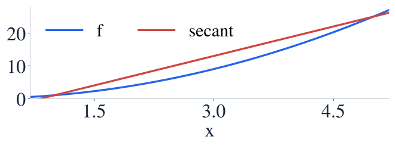
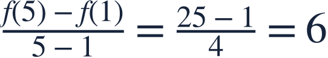
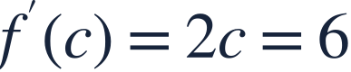
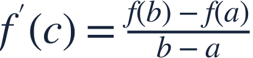

The mean value theorem
평균값정리
Some instantaneous slope must match the average slope when the Mean Value Theorem applies.
평균값정리의 조건이 맞으면 순간 기울기가 평균 기울기와 같은 점이 있습니다.
Some instantaneous slope must match the average slope when the Mean Value Theorem applies.
평균값정리의 조건이 맞으면 순간 기울기가 평균 기울기와 같은 점이 있습니다.
Check continuity on the closed interval and differentiability on the open interval.
닫힌 구간의 연속성과 열린 구간의 미분가능성을 확인하세요.

The theorem guarantees an interior tangent parallel to the endpoint secant.
정리는 양 끝점을 잇는 할선과 평행한 내부 접선을 보장합니다.

Compute the average slope over the entire interval.
구간 전체의 평균 기울기를 구합니다.

Set an interior derivative equal to that average slope.
내부 점의 도함수를 평균 기울기와 같게 놓습니다.
The solution lies inside the required open interval.
구한 점이 필요한 열린 구간 안에 있습니다.

Solving an equation is not enough; verify the theorem’s hypotheses and the location of c.
방정식만 풀지 말고 정리의 조건과 c의 위치를 확인하세요.
Find the MVT point in (0,2).
(0,2) 안의 평균값정리 점을 구하세요.